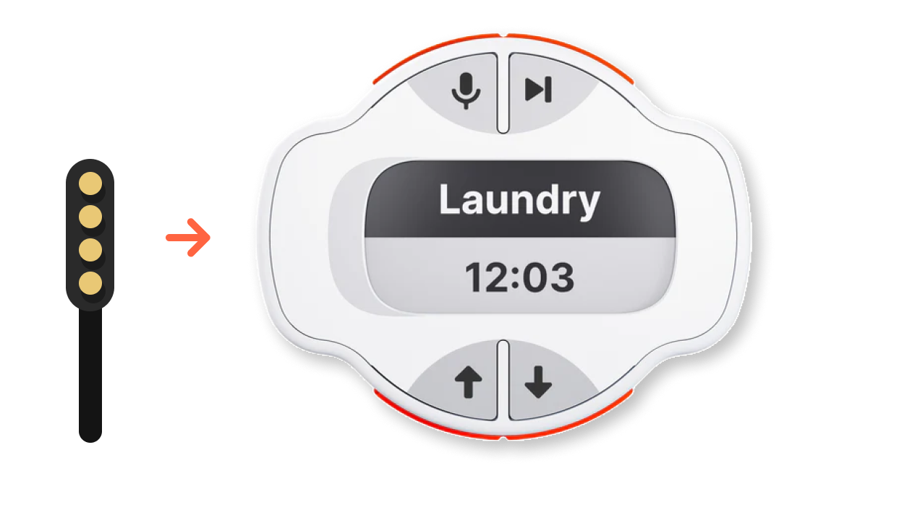

Halfmind Reminder 固件升级
更新固件，解锁 Halfmind Reminder 的 AI 功能
第 1 / 3 步
第一步：连接设备
使用附带磁吸数据线连接设备，如图示方向。请加微信halfmind-kaike获取一对一帮助。

状态：浏览器检查中...
操作建议：升级期间请勿断开数据线；如果失败，先重启设备后再试一次。
使用附带磁吸数据线连接设备，如图示方向。请加微信halfmind-kaike获取一对一帮助。
